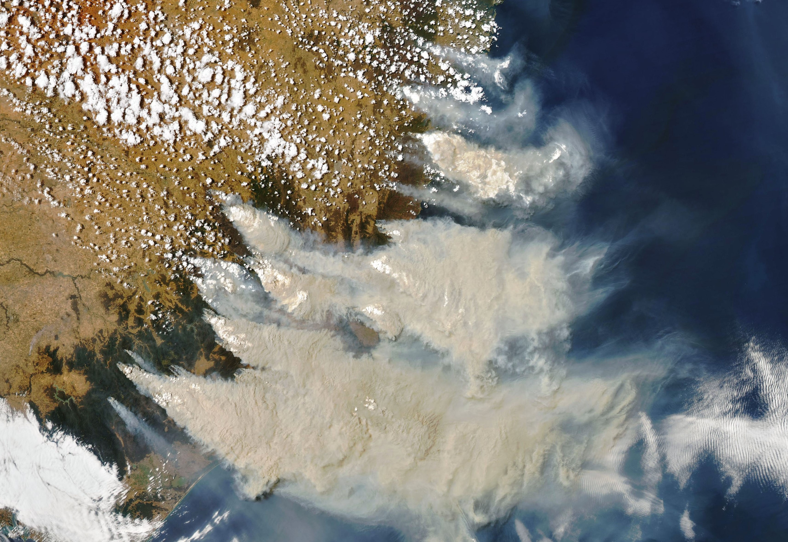
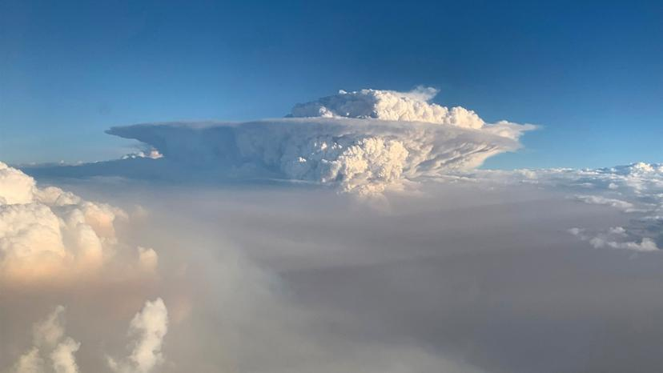
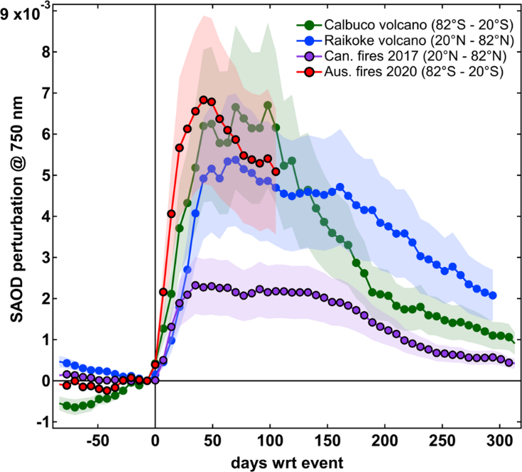
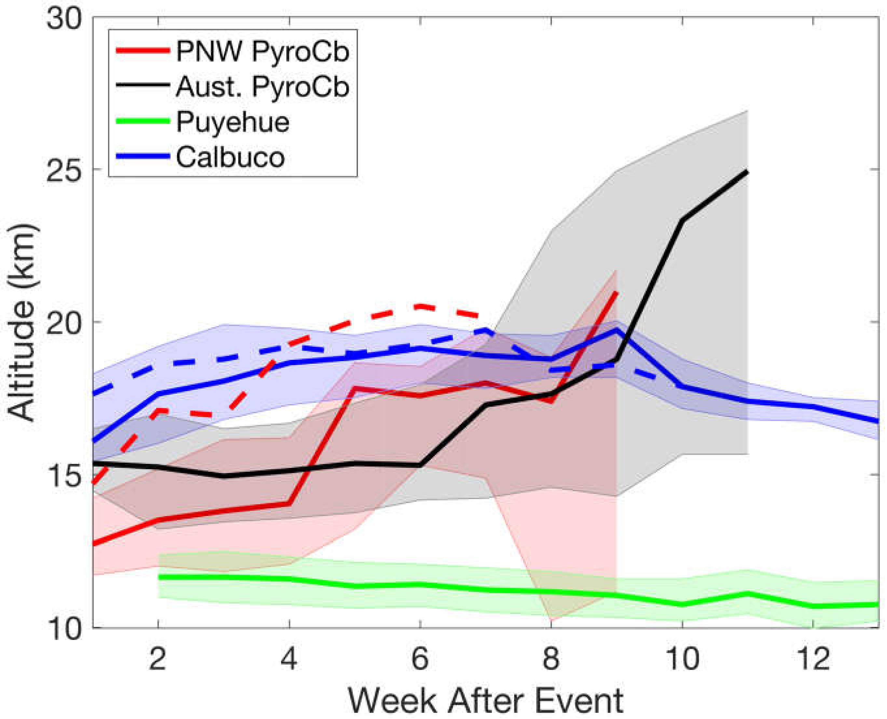

Word Count: 968
The wildfire season in Australia between Sept 2019 and Jan 2020 saw some of the largest areas of land burnt, resulting
in the formation of aerosols on par with volcanic activity.
This write-up covers literature on the event, and summarises the topic.
My Role: Researcher
In November 2020, a news article reported on a paper by Khaykin et al. concerning the unprecedented extent and
magnitude of the recent Australian wildfires and the potential future impacts of increased wildfires under global
climate change. There are concerns that climate change will likely result in an increase in frequency and magnitude
of wildfires, with 25.3% increase in fire weather season length, and an increased global frequency in fire weather
seasons of 53.4% already observed since 1979 (Jolly et. al, 2015).
Natural wildfires can be a key component in ecosystems, clearing dead and decaying plant material, reduce risks of
pest, and creating area for new plant growth (Moritz et. al, 2014). Some plant species, such as the lodgepole pine,
need regular fires in order to release their seeds (Lotan et. al 1985). Such events occur naturally during “fire weather
season”, where a range of contributing factors such as low rainfall, low humidity, wind speed and high temperatures
(Hübnerova et. al, 2020) greatly increase the likelihood of a fire. Historically these events are common in North America,
Mediterranean Europe, Australia (Hunter et. al, 2020) and Africa (Gatebe et al., 2014). In some cases, controlled fires are
used as a prescribed technique to maintain particular areas of land and/or to also reduce risk of much larger fires.
Wildfire’s interact with local albedo too, the smoke from the immediate burning can increase albedo, and have a general
cooling effect through the reduction of shortwave radiation reaching the surface (Stone et al, 2011). However, aerosol
composition variations, such as black carbon, can also absorb incoming radiation (Stone et al., 2011). In the wake of a
fire, surface albedo can vary depending on the original land type; in some areas with sparse vegetation, the burning of
biomass can reveal brighter material such as sand below (Gatebe et al., 2012). Where there is greater vegetation, albedo
is typically lowered due to the burnt remains of biomass absorbing more radiation (Gatebe et al., 2014).
 Figure 1: Natural colour image of the Australian Wildfire acquired on January 4th from the MODIS on NASA’s Aqua satellite
Source: NASA Earth Observatory, 2020
The wildfire season in Australia between September 2019 and January 2020 saw mass areas burnt (Fig. 1) at an unprecedented scale of 5.8 million hectares, approximately 21% of Australia’s temperate forest area (Boer et al., 2020). Notably during the fire, there was formation of a pyrocumulonimbus (pyroCb) cloud (Ndalila et al., 2019) as seen in Fig. 2, which Khaykin et al. stated are comparable to volcanic eruptions in size. Typically, volcanoes can release volcanic ash and sulphur dioxide gas, causing an increase in aerosol concentration within the stratosphere, and have been known to offset the warming effect from incoming solar radiation (Ma et al., 2020). A pyroCb is characterised as a cumulonimbus (thunderstorm) cloud that uses the heat from fire to generate lift (Densmore, 2017). The tops of these formations can reach the upper troposphere and lower stratosphere (Ndalia et al., 2020), and are typically are made up of condensed water, smoke aerosols, organic and black carbon, as well as combustion products in their gaseous forms (Khaykin et al., 2020). NASA/CNES CALIPSO satellite recorded that the Australian Wildfire plume reached 25km above the surface, making it the highest recorded wildfire-caused plume tracked by CALIPSO (NASA Earth Observatory, 2020). Khaykin et al. noted that the instantaneous horizontal extent of the PyroCb reached 6.1 million km2 on January 7th.
 Figure 2: The pyroCb cloud formation from the Australian Wildfire
Source: NBC News, 2020
Aerosol optical depth is a measure of the amount of aerosol present in the atmosphere. Using Stratospheric Aerosol Optical Depth (SAOD) as a measure, Khaykin et al. found that change in the stratosphere were comparable to two of the largest volcanic eruptions over the past 25 years, with the fires continuing to decay at a similar rate to the volcano’s over 3 months from the start of the event. The North American wildfires in 2017 were of a magnitude larger than previous wildfires, causing stratospheric variations on scale not seen before from pyroCbs, reaching 23km above surface level (Yu, 2019). However as shown in Fig. 3, the Australian wildfires had an even bigger perturbance to the stratosphere aerosol concentration, and were on par with the Calbuco eruption (2015) and the Raikoke eruption (2019).
 Figure 3: SAOD perturbation at 746nm for a extended time period following the Australian wildfires (red), Pacific North West/Canadian wildfire (purple) and the Raikoke (blue) and Calbuco (green) eruptions
Source: Khaykin et. al, 2020
Due to the predominantly carbon-based nature of the aerosols within the PyroCb, the smoke cloud absorbed large amounts of sunlight and rose at a rate of 0.45km/day (Khaykin et al., 2020). The authors noted that this rise created a compact smoke bubble that peaked at 36km above surface level, much higher than volcanic aerosols over the past 25 years. Christian et al. (2020) had compared the height of the pyroCb from the North American (Pacific North West) fires, the Calbuco eruption and Puyehu eruption (2011) in Fig. 4, highlighting the vertical extent of the aerosols in the stratosphere over time, and the notable height of the Australian wildfire pyroCb.
 Figure 4: The altitude development of the Australian wildfires (black), Pacific North West/Canadian wildfire (red) and the Puyehue (green) and Calbuco (blue) eruptions. The solid line represents data from the CALIOP lidar and dashed from the CATS lidar. Shaded areas are the 25th and 75th percentile.
Source: Christian et al., 2020
Khaykin et al. also found that a localised vortex formed around the bubble, following its movement and rise. Using data from European
Centre for Medium-Range Weather Forecasts (ECMWF), an ozone depleting anomaly was identified above the smoke bubble, which
Kablick III et al. (2020) found too. The assumed cause was thought to be the rise of ozone-poor tropospheric air, and the
potential chemistry of the cloud that could lead to ozone depletion.
In conclusion, wildfires are a common occurrence with a range of benefits and risks, however the Australian wildfires occurred at a
scale which had not been seen before. Furthermore, the impacts in terms of aerosol emissions were comparable to volcanic eruptions
in the previous 25 years, as well as more novel effects such as ozone depletion. In the face of further climate change, there is
greater risk of wildfires, leading to an increased likelihood of significant disturbances within the atmosphere due to wildfire
induced aerosols. This will lead to alternations in how prescribed burns are issued, in order to control extreme wildfire events in
the future (Di Virgillio et al., 2020).
The Guardian. (2020). Smoke cloud from Australian summer’s bushfires three-times larger than anything previously recorded. [online] Available at: https://www.theguardian.com/australia-news/2020/nov/03/smoke-cloud-from-australian-summers-bushfires-three-times-larger-than-anything-previously-recorded [Accessed 19 Nov. 2020]
Boer, M.M., Resco de Dios, V. and Bradstock, R.A. (2020). Unprecedented burn area of Australian mega forest fires. Nature Climate Change
Christian, K., Yorks, J. and Das, S. (2020). Differences in the Evolution of Pyrocumulonimbus and Volcanic Stratospheric Plumes as Observed by CATS and CALIOP Space-Based Lidars. Atmosphere
Di Virgilio, G., Evans, J.P., Clarke, H., Sharples, J., Hirsch, A.L. and Hart, M.A. (2020). Climate Change Significantly Alters Future Wildfire Mitigation Opportunities in Southeastern Australia. Geophysical Research Letters, 47(15)
earthobservatory.nasa.gov. (2020a). Australian Smoke Plume Sets Records. [online] Available at: https://earthobservatory.nasa.gov/images/146235/australian-smoke-plume-sets-records [Accessed 19 Nov. 2020]
earthobservatory.nasa.gov. (2020b). Fires and Smoke Engulf Southeastern Australia. [online] Available at: https://earthobservatory.nasa.gov/images/146110/fires-and-smoke-engulf-southeastern-australia [Accessed 25 Nov. 2020]
Chow, D. (2020). “Fire clouds”: After Australia, scientists warn the erratic weather phenomenon could become a new reality. [online] NBC News. Available at: https://www.nbcnews.com/science/environment/fire-clouds-after-australia-scientists-warn-erratic-weather-phenomenon-could-n1115686
Gatebe, C.K., Ichoku, C.M., Poudyal, R., Román, M. and Schaaf, C. (2012). Surface Albedo Darkening from Wildfires in Northern Sub-Saharan Africa. AGU Fall Meeting Abstracts
Gatebe, C.K., Ichoku, C.M., Poudyal, R., Román, M.O. and Wilcox, E. (2014). Surface albedo darkening from wildfires in northern sub-Saharan Africa. Environmental Research Letters, 9(6), p.065003.
Hunter, M. and Robles, M. (2020). Tamm review: The effects of prescribed fire on wildfire regimes and impacts: A framework for comparison. Forest Ecology and Management
Jolly, W.M., Cochrane, M.A., Freeborn, P.H., Holden, Z.A., Brown, T.J., Williamson, G.J. and Bowman, D.M.J.S. (2015). Climate-induced variations in global wildfire danger from 1979 to 2013. Nature Communications
Kablick, G.P., Allen, D.R., Fromm, M.D. and Nedoluha, G.E. (2020). Australian PyroCb Smoke Generates Synoptic‐Scale Stratospheric Anticyclones. Geophysical Research Letters, 47(13)
Khaykin, S., Legras, B., Bucci, S., Sellitto, P., Isaksen, L., Tencé, F., Bekki, S., Bourassa, A., Rieger, L., Zawada, D., Jumelet, J. and Godin-Beekmann, S. (2020). The 2019/20 Australian wildfires generated a persistent smoke-charged vortex rising up to 35 km altitude. Communications Earth & Environment
Lotan, J., Brown, J. and Neuenschwander, L. (1985). Role of Fire in Lodgepole Pine Forests
Ma, X., Tu, H. and Wang, Y. (2020). Lidar observations of aerosol enhancement in the upper troposphere and lower stratosphere. IOP Conference Series: Earth and Environmental Science, 513, p.012059
Ndalila, M.N., Williamson, G.J., Fox-Hughes, P., Sharples, J. and Bowman, D.M.J.S. (2020). Evolution of a pyrocumulonimbus event associated with an extreme wildfire in Tasmania, Australia. Natural Hazards and Earth System Sciences
Stone, R.S., Augustine, J.A., Dutton, E.G., O’Neill, N.T. and Saha, A. (2011). Empirical determinations of the longwave and shortwave radiative forcing efficiencies of wildfire smoke. Journal of Geophysical Research, 116(D12)
Valerie, W. and Densmore, S. (n.d.). Key Factors Contributing to Two Pyrocumulonimbus Clouds Erupting During a Prescribed
Yu, P., Toon, O.B., Bardeen, C.G., Zhu, Y., Rosenlof, K.H., Portmann, R.W., Thornberry, T.D., Gao, R.-S., Davis, S.M., Wolf, E.T., de Gouw, J., Peterson, D.A., Fromm, M.D. and Robock, A. (2019). Black carbon lofts wildfire smoke high into the stratosphere to form a persistent plume. Science